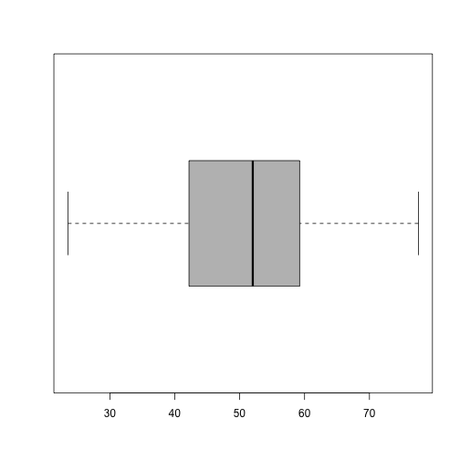
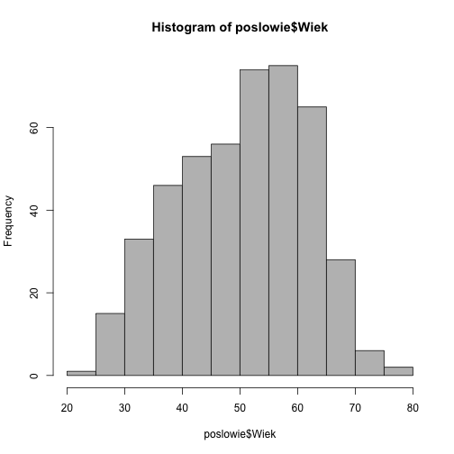
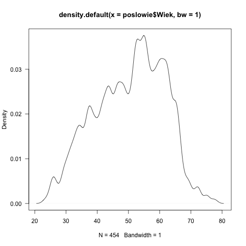

Jak badać rozkład jednej zmiennej?
W tym rozdziale przedstawimy podstawowe narzędzia analizy rozkładu zmiennych ilościowych i jakościowych. Wykorzystamy do tego bazę danych dotyczących posłów z 8 kadencji Sejmu. Dane pobierane są bezpośrednio z Internetu z serwisu GitHub.
poslowie <- archivist::aread("pbiecek/Przewodnik/arepo/07088eb35cc2c9d2a2a856a36b3253ad")
head(poslowie)
## Glosow Klub Wyksztalcenie Zawod
## 1 10500 Prawo i Sprawiedliwość wyższe poseł na Sejm
## 2 18514 Prawo i Sprawiedliwość wyższe parlamentarzysta
## 3 7275 Platforma Obywatelska wyższe agroprzedsiębiorca
## 4 15668 Kukiz'15 wyższe specjalista ds. medialnych
## 5 12021 Prawo i Sprawiedliwość wyższe poseł na Sejm RP
## 6 7935 Kukiz'15 średnie ogólne dziennikarz
## ImieNazwisko DataUrodzenia MiejsceUrodzenia Wiek
## 1 Adam Abramowicz 1961-03-10 Biała Podlaska 55.01
## 2 Andrzej Adamczyk 1959-01-04 Krzeszowice 57.19
## 3 Zbigniew Ajchler 1955-11-21 Szamotuły 60.32
## 4 Adam Andruszkiewicz 1990-06-30 Grajewo 25.69
## 5 Waldemar Andzel 1971-09-17 Czeladź 44.48
## 6 Piotr Apel 1984-02-08 Warszawa 32.08
Zmienna ilościowa
W zbiorze danych poslowie mamy kilka zmiennych ilościowych.
Czy potrafisz je wskazać?
Z pewnością należą do nich Wiek i Glosow.
Średnia
Jaki jest średni wiek posłów?
mean(poslowie$Wiek)
## [1] 50.36813
Średnia Windsorowska
A średnia obcięta, wyznaczona na podstawie 60\% środkowych obserwacji?
mean(poslowie$Wiek, trim=0.2)
## [1] 51.01785
Mediana
Mediana bliska średniej, czyżby brak skośności?
median(poslowie$Wiek)
## [1] 51.87
Odchylenie standardowe
Odchylenie standardowe zmiennej wiek.
sd(poslowie$Wiek)
## [1] 11.03323
Rozstęp
Jaka jest najmniejsza i największa wartość przyjmowana przez zmienną Wiek?
range(poslowie$Wiek)
## [1] 23.50 77.53
Rozstęp kartylowy
Ile wynosi rozstęp kwartylowy (różnica pomiędzy 3. a 1. kwartylem)?
IQR(poslowie$Wiek)
## [1] 17.195
Kurtoza / miara spłaszczenia
Aby ją wyznaczyć potrzebujemy pakietu e1071.
Kurtozę można liczyć na kilka sposobów.
Typ: 1
Typ: 2 (domyślny w SAS i SPSS), nieobciążony estymator kurtozy dla r. normalnego.
Typ: 3 (domyślny w R)
Więcej o porównaniu tych estymatorów D. N. Joanes and C. A. Gill (1998), Comparing measures of sample skewness and kurtosis. The Statistician, 47, 183–189.
library(e1071)
kurtosis(poslowie$Wiek)
## [1] -0.7078222
Skośność
Przyjmując
Typ: 1
Typ: 2 (domyślny w SAS i SPSS),
Typ: 3 (domyślny w R)
Wszystkie trzy estymatory są nieobciążone dla modelu normalnego.
skewness(poslowie$Wiek)
## [1] -0.2292414
Kwantyle
Wybrane kwantyle zmiennej wiek.
W pakiecie R zaimplementowanych jest 9 różnych metod liczenia kwantyli, zobacz argument type.
quantile(poslowie$Wiek, c(0.1, 0.25, 0.5, 0.75, 0.9))
## 10% 25% 50% 75% 90%
## 34.586 42.025 51.870 59.220 63.864
Odchylenie medianowe
Odchylenie medianowe
Stała jest wybrana by wartość oczekiwana była równa odchyleniu standardowemu dla modelu normalnego.
mad(poslowie$Wiek)
## [1] 12.39454
Najwazniejsze statystyki
summary(poslowie$Wiek)
## Min. 1st Qu. Median Mean 3rd Qu. Max.
## 23.50 42.02 51.87 50.37 59.22 77.53
Wykres pudełkowy
boxplot(poslowie$Wiek, col="grey", horizontal = TRUE)

Histogram
Histogram jest bez wątpienia najpopularniejszą statystyką graficzną przedstawiającą rozkład jednej zmiennej. Przedstawia liczeby wartości zmiennej w poszczególnych przedziałach (te przedziały nazywane są również klasami lub kubełkami). Deklaracja tej funkcji (pomijając argumenty graficzne) jest następująca:
hist(x, breaks = "Sturges", freq = NULL, probability = !freq,
right = TRUE, plot = TRUE, labels = FALSE, ...)
Argument x określa wektor wartości, dla których histogram ma być wyznaczony, argument breaks określa podział zakresu zmienności wektora x na przedziały, argument freq określa, czy przy rysowaniu histogramu mają być zaznaczane frakcje, czy liczebności elementów w przedziałach. Argument right określa, czy przedziały mają być traktowane jako domknięte prawostronnie, czy lewostronnie, argument plot określa, czy histogram ma być rysowany, czy tylko wyznaczany ma być opis histogramu, argument labels pozwala na wskazanie wektora napisów, które będą naniesione na słupki odpowiadające kolejnym przedziałom.
Jeżeli nie podamy liczby przedziałów, to zostanie ona dobrana w~zależności od liczby obserwacji oraz zmienności danej zmiennej. Do określania liczby i szerokości przedziałów służy argument breaks. Jeżeli podamy za wartość tego argumentu liczbę, to będzie ona potraktowana jako sugestia oczekiwanej liczby automatycznie wyznaczonych przedziałów (tylko sugestia ponieważ funkcja hist() może liczbę nieznacznie zwiększyć lub zmniejszyć). Jeżeli podany będzie wektor liczb, to będzie on uznany za wektor punktów rozdzielających przedziały (przedziały nie muszą mieć równych szerokości). Jeżeli argumentem będzie napis, to zostanie on zinterpretowany jako nazwa algorytmu do wyznaczenia liczby przedziałów (możliwe wartości to "Sturges", "Scott", "FD" i "Freedman-Diaconis".
hist(poslowie$Wiek, col="grey")

Domyślnie, funkcja hist() na osi poziomej zaznacza liczebności obserwacji w~poszczególnych klasach. Jeżeli chcemy wyznaczyć proporcje, to należy funkcji hist() podać argument freq=FALSE lub (równoważnie) probability=TRUE.
Dystrybuanta empiryczna
plot(ecdf(poslowie$Wiek), las=1)

Jądrowy estymator gęstości
plot(density(poslowie$Wiek, bw=1), las=1)

plot(density(poslowie$Wiek, bw=3), las=1)

Zmienna jakościowa
- dla zmiennych ciągłych, dyskretnych, ciągłych z atomem
- estymator jądrowy gęstości (histogram)
- ecdf
- testy zgodności